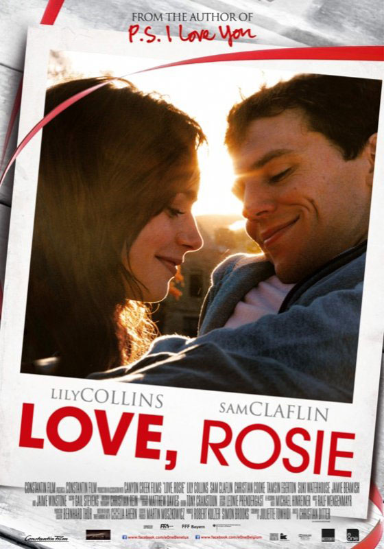
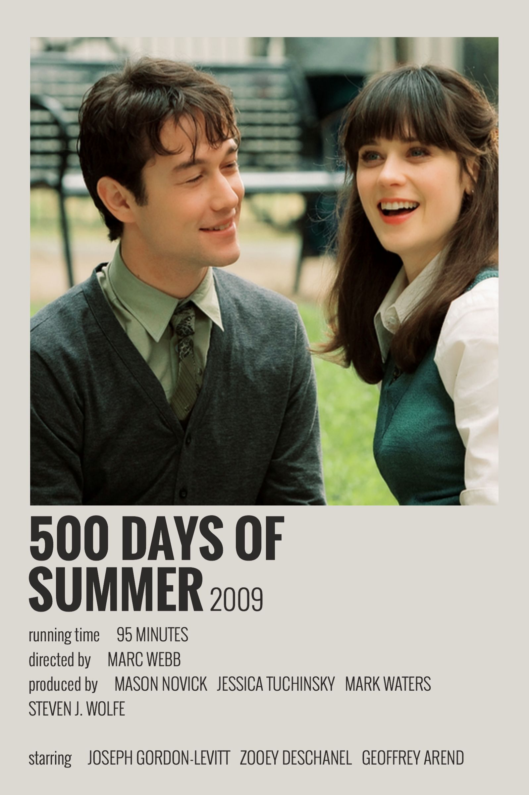
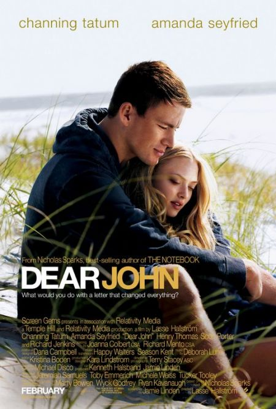

THE VOW (2012)
APA ITU THE VOW
The Vow adalah sebuah film drama percintaan 2012 yang disutradarai oleh Michael Sucsy dan dibintangi oleh Channing Tatum dan Rachel McAdams.[2] Film tersebut terinspirasi dari kisah nyata dari Kim and Krickitt Carpenter.[3] The Vow meraih kesuksesan di box office, menjadikan film tersebut sebagai film drama percintaan dengan keuntungan tertinggi ketujuh sepanjang masa. Film ini adalah film terakhir Spyglass Entertainment sebelum diambil alih oleh MGM.
SINOPSIS
Leo (Channing Tatum) dan Paige (Rachel McAdams) keluar dari gedung bioskop. Dalam perjalanan pulang, ketika mereka berhenti di lampu merah. Paige membuka sabuk pengaman membungkuk dan mencium Leo. Pada saat itu, sebuah truk domba menabrak mereka dari belakang dan Paige terpelanting keluar melalui kaca depan. Keduanya bergegas ke ruang gawat darurat, dan seperti Leo,teringat bagaimana dia dan Paige pertama kali bertemu. Adegan bagaimana mereka dirayu, semua kenangan indah mereka, dan sampai saat hari pernikahan mereka. Leo tidak mengalami luka yang begitu parah, sehingga ia dapat menjaga Paige sampai ia kembali sadar.
Ketika Paige sadar, dia berpikir Leo adalah dokternya, ternyata ia kehilangan sebagian memori otaknya. Paige memverifikasi apa kenangan yang tersisa adalah ketika dia mulai percakapan dengan Leo. Ternyata dia tidak kehilangan semua, kecuali untuk beberapa tahun terakhir dari hidupnya diberikan dia masih ingat bahwa dia ingin menjadi seorang seniman di sekolah tinggi. Paige tidak ingat mengapa dia meninggalkan sekolah hukum, dan bahkan dia tidak ingat bahwa telah menikah dengan Leo, Paige malah ingat dengan mantan tunangannya, Jeremy.Kemudian orang tuanya mengetahui tentang kecelakaan itu dan datang untuk mengunjunginya dan itu untuk pertama kalinya bahwa Leo bertemu mereka. Mereka belajar bahwa dokter menyarankan dia kembali ke rutinitas normal, tapi orangtuanya dan Leo tidak setuju tentang apa rutinitas normal nya pada saat ini. Leo mengatakan Paige bahwa dia berhenti berbicara dengan orang tuanya sebelum kecelakaan terutama karena ayahnya bersikeras dia menghadiri sekolah hukum sementara ia menghadiri sekolah seni. Paige tidak dapat mengerti mengapa ia memutuskan pertunangan dengan Jeremy. Leo berusaha membujuknya untuk kembali ke rumah dengan dia tapi dia meminta bukti seperti buku harian. Dia menegaskan bahwa dia tidak tahu dari buku harian seperti yang ada sebelum kecelakaan.Orangtuanya bersikeras membawa pulang Paige dengan mereka dan Paige setuju dengan asumsi dia mungkin telah menikahi Leo untuk beberapa saling menguntungkan. Ketika dia akan pergi, Leo datang untuk memperdengarkan Paige pesan suara di mana dia terdengar sangat bahagia dan romantis. Paige memutuskan untuk kembali dengan Leo berharap itu akan membantunya mendapatkan kembali ingatannya hilang.
LOVE ROSIE (2014)

APA ITU LOVE ROSIE
Love, Rosie merupakan sebuah film Romantis Komedi-Drama Inggris yang dirilis pada tahun 2014. Film yang disutradarai oleh Christian Ditter ini diperankan oleh Lily Collins, Sam Claflin dan masih banyak lagi. Film ini dirilis pada 22 Oktober 2014.
SINOPSIS
Suatu kali, Greg (Christian Cooke) mengajak Rosie untuk pesta dansa di sekolah, awalnya Rosie menolak ajakan Greg. Mengetahui Alex akan pergi pesta dengan gadis bernama Bethany, akhirnya Rosie menerima tawaran Greg. Namun, Alex dan Rosie tetap dekat, bahkan saling mendukung untuk mengejar mimpi mereka masing-masing. Rosie diterima kursus di Manejeman Hotel di Universitas Boston, bermimpi ingin memiliki hotel sendiri, ia juga ingin pergi dari Inggris. Rosie diterima di manajeman hotel di Universitas Boston. Rosie ingin memberitahu kepada Alex, namun mendapati Alex sedang berhubungan dengan Bethany, hal itu membuat Rosie jijik. Seusai pesta, Rosie ternyata hamil karena hubungannya dengan Greg.
Namun, ia tidak memberi tahu Alex, karena khawatir dia akan melepas kesempatannya belajar di Harvard demi membantu merawat Rosie. Sebab, Alex bercita-cita ingin menjadi dokter yang sukses. Sayangnya, masalah yang menimpa Rosie ini memaksanya menunda mimpinya. Dia melahirkan anak perempuan yang diberi nama Katie, 5 tahun kemudian Rosie mengunjungi Alex di Boston dan menghabiskan malam bersama. Selanjutnya, Alex mengetahui kekasihnya hamil dan memberi tahu kepada Rosie. Akhirnya Rosie marah dan meninggalkan kota Boston. Mengetahui perilaku Alex, Rosie berdamai dengan Greg yang awalnya lari ke Ibiza. Selama bersama Greg, Rosie mengetahui Alex berpisah dengan kekasihnya usai mengetahui bayi tersebut bukan miliknya. Alex datang ke pemakaman ayah Rosie, semenjak perpisahan dengan kekasihnya, dan menemui Rosie untuk berdamai. Selama menjalani kehidupan bersama, Rosie mendapati Greg selingkuh dan menemukan surat dari Alex yang disembunyikan. Dengan kejadian itu, berakhirlah hubungan Rosie dan Greg. Setelah perpisahannya, Greg mendapatkan pasangan barunya yang tidak lain adalah Bethany hingga sampai ke pernikahan.
500 DAYS OF SUMMER (2009)

APA ITU 500 DAYS OF SUMMER
500 Days of Summer adalah film drama komedi romantis Amerika Serikat tahun 2009 yang disutradarai oleh Marc Webb dan diproduseri oleh Mason Novick, Jessica Tuchinsky, Mark Waters dan Steven J. Wolfe. Naskah film ini ditulis oleh Scott Neustadter dan Michael H. Weber. Film ini dibintangi oleh Joseph Gordon-Levitt dan Zooey Deschanel.
Film 500 Days of Summer merupakan film kolaborasi kedua Joseph Gordon-Levitt dan Zooey Deschanel setelah film Manic. Film ini ditayangkan secara perdana di Festival Film Sundance pada tanggal 17 Januari 2009[4] dan dirilis di Amerika Serikat pada tanggal 17 Juli 2009 secara terbatas dan 7 Agustus 2009 secara luas.[5] Film ini mendapatkan review positif dari para kritikus.
SINOPSIS
Dalam film 500 Days Summer digambarkan bagaimana seorang laki-laki sejati bernama Tom yang berekspektasi bahwa hubungannya dengan Summer adalah hubungan yang serius.
Awalnya Tom mengira bahwa dirinya tidak benar-benar menyukai Summer, menurut temannya ia menyukai Summer hanya karena mabuk, tetapi ketika ia bertemu Summer di mesin fotokopi Summer malah mencium dirinya.
Ada banyak kesamaan antara Tom dan Summer mereka sama-sama memiliki selera musik yang sama, selama beberapa bulan berikutnya mereka sering menghabiskan waktu berdua.
Tom berekspektasi bahwa hubungan dia dan Summer akan serius dan menikah lalu punya anak, tetapi Summer malah sebaliknya ia menganggap Tom hanya sebagai teman walaupun ia sendiri senang menghabiskan waktu bersama Tom.
DEAR JOHN (2010)

APA ITU DEARJOHN
Dear John adalah film drama romantis Amerika Serikat tahun 2010 yang disutradarai oleh Lasse Hallström dan diproduseri oleh Marty Bowen, Wyck Godfrey, dan Ryan Kauvanaugh.
Berdasarkan novel dengan judul yang sama karya Nicholas Sparks tahun 2006, film ini dibintangi oleh Channing Tatum, Amanda Seyfried, Henry Thomas, Scott Porter, dan Richard Jenkins. Dear John difilmkan pada tahun 2009 di Charleston, Carolina Selatan.
SINOPSIS
Pada tahun 2003, John Tyree (Channing Tatum), seorang sersan di Pasukan Khusus Amerika Serikat yang tergeletak di tanah dalam pertempuran dengan beberapa luka tembak di tubuhnya. Koinnya mulai militer Amerika Serikat dan menyatakan bahwa hal terakhir yang ia pikir sebelum ia pingsan adalah "kau".
Pada tahun 2001 di Charleston, Carolina Selatan, John Tyree sedang berlibur. Ia bertemu Savannah Lynn Curtis (Amanda Seyfried), seorang mahasiswa di musim semi, ketika John menyelamatkan tasnya dari air. Selama dua minggu, Savannah dan John jatuh cinta. John bertemu tetangganya, Tim Wheddon (Henry Thomas) dan putranya, Alan (Luke Benward), yang memiliki autisme.
Savannah bertemu ayah John, Bill Tyree (Richard Jenkins), seorang penyendiri yang tampaknya terobsesi dengan koleksi koinnya (terutama bagal), tetapi minat ayah John itu membuat Savannah tertarik dan mengejutkan John. Savannah mengatakan pada John bahwa ayahnya, seperti Alan, mungkin memiliki autisme tinggi. Hal ini membuat John kecewa, pergi, lalu menyerang dan berkelahi dengan teman Savannah, Randy (Scott Porter), karena ejekan Randy serta Tim. John meminta maaf kepada Tim dan meninggalkan catatan untuk Savannah. Savannah datang ke rumah John setelah membaca catatan itu dan mereka menghabiskan satu hari terakhir bersama-sama dan berpisah. Savannah berkata, "Sampai bertemu lagi" daripada selamat tinggal, meninggalkan John untuk kuliah.
John kemudian kembali ke militer menjadi sersan Pasukan Khusus dan berpisah dengan ayahnya. Selama John di militer, John dan Savannah melanjutkan hubungan mereka melalui surat, berharap dapat membangun kehidupan bersama-sama ketika ia meninggalkan tentara. Tetapi peristiwa serangan 11 September membuat John mendaftar ulang menjadi sersan Pasukan Khusus untuk dua tahun ke depan. Hal ini membuat Savannah sangat kecewa, tetapi ia menerima keputusan John. John dan Savannah kembali melanjutkan hubungan mereka melalui surat, tetapi beberapa saat kemudian,
John mulai cemas menunggu kapan surat berikutnya datang (karena sudah lama John tidak mendapatkan surat balasan dari Savannah). Ketika surat John datang, di dalam surat itu, Savannah memberitahukan bahwa ia telah bertunangan dengan orang lain. John sangat kecewa dan sakit hati, sehingga ia membakar semua surat Savannah.